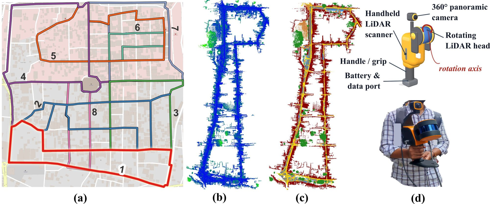
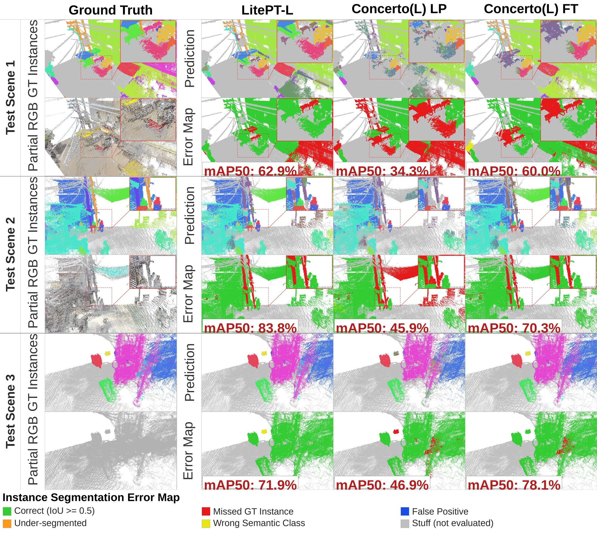
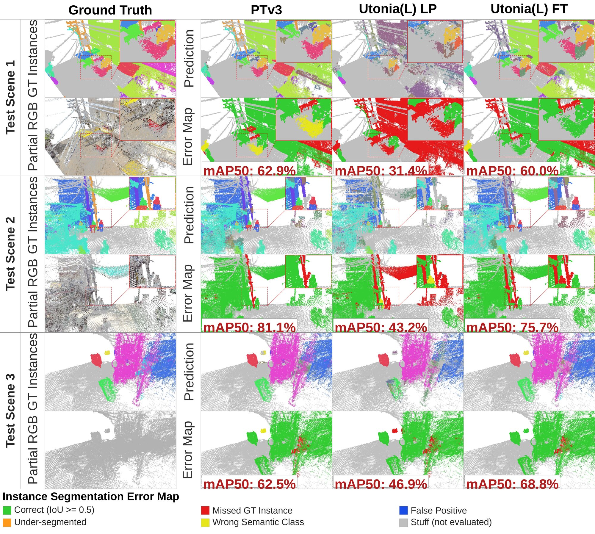

Large files: use bhopalmls_download.py
(Python 3, no extra packages, needs a LiDAVerse account; streams to disk and checks every file), e.g.
python3 bhopalmls_download.py --release international --files benchmark

Bhopal_4 in the viewer, 12 classes, subsampled for display · ▶ Watch the overview
A three-minute overview: the Azad Market scenes in the dataset viewer, the 12-, 21- and
68-class taxonomies and the instance labels, the benchmark, and the cross-region transfer finding. The viewer
scenes are subsampled for display; the dataset is denser. The narration, in English or Hindi, is synthesised.
Narration
Overview
BhopalMLS captures narrow commercial corridors, mixed traffic, overhead wiring, roadside objects, informal shopfronts, and dense vegetation from handheld mobile laser scanning. Collected in an unplanned and heterogeneous dense city setting in India, it challenges state-of-the-art models trained on well-planned western datasets.
The dataset is organized as a 68-class V10 taxonomy, a 12-class coarse semantic benchmark, and a 21-class fine-grained benchmark for object-heavy scene understanding, highlighting extreme geometric clutter and diverse region-specific categories.
Annotation Samples
Labelled scenes beside the 360-degree imagery they were coloured from, the semantic labels beside the raw LiDAR intensity, and wider street scenes with zoomed details of small and rare classes. Faces in the photos are blurred.
(a) LiDAR annotation with RGB, (b) semantic annotation vs. LiDAR intensity, (c) annotation samples, (d) wider scenes with zoom call-outs; 12-class colours. Full-resolution SVG (15 MB)
Interactive Scene Explorer
Explore partial 3D point clouds from the dataset directly in your browser. Please note that these scenes are provided solely for visualization and understanding; certain classes, such as road surfaces, have been partially sampled to optimize browser performance. Select a scene below and use the toolbar to toggle between raw RGB, semantic taxonomies, and instance segmentation modes. Click on objects with the 'Interact' tool to inspect them.
Loading
Instance Gallery
One annotated instance per fine class, next to the street-view crop it was annotated from. Each crop is a 90° cut of the 360° panorama, framed on the instance. The 3D view opens from the scanned side and can be turned, zoomed and recoloured by intensity, height or class. Faces and number plates are blurred.
Benchmarking Foundation Models
BhopalMLS benchmarks state-of-the-art supervised models and pretrained 3D foundation models. Fine-tuned foundation models successfully transfer to complex, unstructured scenes, significantly outperforming models trained from scratch.
Supervised vs Foundation
Fine-tuned foundation models outperform supervised training from scratch: Utonia(L) reaches 71.28% mIoU against PTv3's 68.04%, and 72.12%, the best in Table 4, when trained jointly with the 6 moving subclasses (†).
PTv3 (Scratch)
68.04% mIoU
Utonia(L) Fine-tuned
71.28% mIoU
Utonia(L)† Fine-tuned (best)
72.12% mIoU
Asymmetric Transferability
Cross-region experiments (Ke-MLS, Toronto-3D, Paris-Lille-3D, SemanticKITTI) reveal that models trained on BhopalMLS generalize to other benchmarks better than the reverse on every pair (by up to 36 mIoU points). Controlled retraining traces this to the coverage of BhopalMLS's subtype inventory, not to dataset size or corridor geometry.
Per-class IoU (%) for 12 classes (A) and 21 classes (B): supervised 9ch baselines, fine-tuned foundation models, the † joint moving-class variants and, for 12 classes, Utonia(L) C2 (no Lovász); best per column outlined, mIoU at the right. Supplementary Fig. 8.
Row-normalised confusion matrices (12 classes) of the four fine-tuned foundation models on the test set (486 scenes); diagonal = recall, red dashed = confusions of 10% or more. Supplementary Fig. 13.
Taxonomy & Class Statistics
Explore the hierarchical label structure and dataset-level point counts. The taxonomy defines static and dynamic (moving) classes across the coarse (12-class) and fine-grained (21-class) benchmarks, the 62 static classes of the primary benchmark, and the full 68-class taxonomy.
Instance Segmentation Benchmarks
BhopalMLS provides rich instance-level annotations for all "thing" classes. Below are the quantitative baseline results and qualitative error maps for the 12-class and 21-class instance segmentation tracks.
12-class instance setting
Stuff: Ground, Vegetation, Road, Wire. Things: Building, Pole and Tower, Wire-Structure Connector, Vehicle, Board, Fencing, Human and Animal, Road Side Object.
Best Utonia(L) FT mAP50
44.07%
Best Utonia(L) FT mAP
33.09%
21-class instance setting
Stuff: Ground, Vegetation, Road, Wire. Things: 17 fine classes including Stairs, 2/3/4-Wheeler, Shop Shade, Mannequin, and Road Side Object (other).
Best Utonia(L) FT mAP50
39.83%
Best Utonia(L) FT mAP
30.63%

12-class instance predictions and error maps.

21-class instance predictions and error maps.
Citation
If you use BhopalMLS in your research, please cite our paper:
@inproceedings{chauhan2027bhopalmls,
title = {BhopalMLS: A LiDAR Dataset for Semantic Scene Understanding in Heterogeneous Urban Environments},
author = {Chauhan, Pyare Lal and Kumar, Vaibhav and Lohani, Bharat},
booktitle = {Proceedings of the IEEE/CVF Winter Conference on Applications of Computer Vision (WACV)},
year = {2027}
}